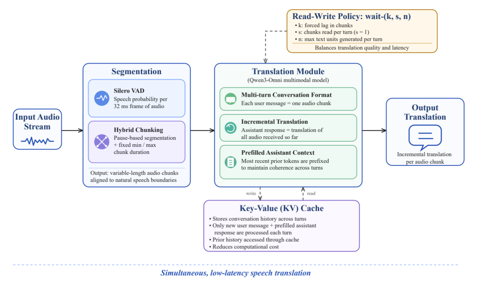
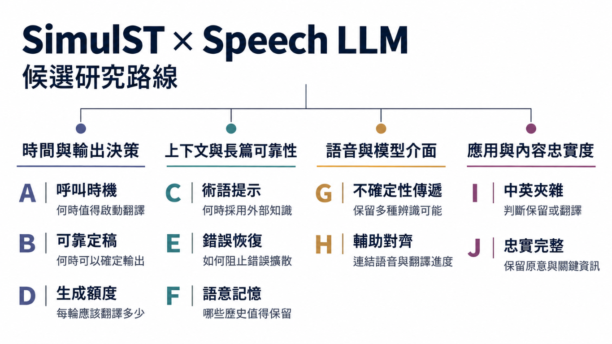

2026 年 10 月 22 日 · 研究生與指導老師討論
Zipformer／Streaming Transducer 的角色與研究空間
從已選定的復現論文出發，討論 A–J 十個候選方向。
19 頁主簡報 · 約 20 分鐘報告後接討論
本次呈現文獻整理與研究假設，尚無本研究模型實驗結果。
研究起點：Xing et al., IWSLT 2026。文獻核對日：2026-10-21。
評估 Xing et al. 的方法，作為初步實驗起點。
| 原論文實驗資料（開發集） | 來源與翻譯方向 |
|---|---|
| MCIF | ACL 各會議的學術演講錄音；英→德／中／義 |
| IWSLT26 Czech | 捷克國會眾議院會議錄音；捷克語→英語 |
請老師確認：這套方法搭配 MCIF 英翻中，是否適合作為起點？
Xing et al. 2026, §3.1；IWSLT 2026 資料下載。測試音訊公開不等於參考譯文公開。

原論文架構重繪 · 非本研究新方法
| 決策 | 原論文設計 |
|---|---|
| 何時開始、每次讀多少 | wait-(k, s, n)：先讀 k 塊，之後 s = 1 |
| 每輪生成多少 | 最多 n 個文字單位；音訊結尾解除限制 |
| 如何延續翻譯 | 近期譯文 prefill、跨輪 KV cache、重複處理 |
切塊、呼叫與輸出額度互相耦合；後續實驗必須拆開。
Xing et al. 2026，§2、Fig. 1–2。n：中文為字，英／德／義為詞，排除標點與空白。
| 證據層級 | 內容 |
|---|---|
| 已處理 | 離線模型串流化、跨輪延續與重複輸出處理 |
| 作者明示限制 | 錯誤累積、無限串流快取、有限領域調參、推論成本 |
| 我們待驗證 | 哪些失敗真的出現？新訊號是否有額外決策價值？ |
論文的品質–延遲取捨，不能替代我們的實際延遲量測。
Xing et al. 2026，§3.1、§3.3、Table 5、Limitations。均為文獻結果。

| 場景 | 使用者遇到的問題（示意） | 候選方向 |
|---|---|---|
| EMI 課堂 | 中英切換時術語被翻錯，否定或數字漏掉 | C、I、J；A、B |
| 專業演講 | 術語尚未講完就出現，字幕長時間不更新 | A、B、C、D |
| 長時間會議 | 前後人名不一致，錯誤延續，講者自我修正 | E、F、G、H、J |
場景為研究動機，未做使用者研究。術語與自我修正相關證據：RASST、Züfle et al.。
研究提案 · 尚待驗證
假設： 同品質與完整性下，Transducer 訊號能比時間／VAD 更有效地安排呼叫。
| 最小比較 | 判斷依據 |
|---|---|
| 固定週期、VAD、匹配呼叫預算 | 實際延遲、成本、漏譯、末尾積壓 |
| 移除各訊號／只保留最大等待 | 額外訊號是否真的有用 |
呼叫減少，仍可能更慢；blank／emission 不是語意完整證明。
鄰近方法：Xing et al.、NeMo 2026。控制通道的額外價值待驗證。
研究提案 · 示意翻譯軌跡，非模型輸出
| 已收到的語音 | 內部候選 | 定稿問題 |
|---|---|---|
| “We did not …” | 「我們沒有……」 | 否定範圍尚待後文 |
| “… find evidence …” | 「我們沒有發現證據……」 | 哪一段語意已獲支持？ |
| “… of improvement.” | 「我們未發現改善的證據。」 | 同義改寫不等於先前犯錯 |
假設： 對當下訊號做風險校準，能改善「錯誤定稿率–定稿延遲」的取捨。
比較： 原生策略、LocalAgreement、原始信心門檻與校準後策略。
LCP 穩定「且」聲學穩定會更嚴格，不能直接聲稱減少等待。
Hoang & Axelrod, 2026，§3、§6：已有 prefix supervision、confidence 與 commit calibration。
研究提案 · 尚待驗證
假設： 在相同候選下，額外聲學證據可降低誤插，同時保留真正術語的召回。
| 最小比較 | 主要指標 |
|---|---|
| 無提示、全提示、檢索分數門檻 | 術語 precision／recall、誤插率 |
| RASST／EGTA 的適用機制＋有無新訊號 | 過早使用、術語顯示／定稿延遲 |
核心風險：罕見術語也可能是 Transducer 最不可靠的部分。
研究提案 · 以下為額度示意，不是實測吞吐量
總允許輸出量 = 各次呼叫的額度 n₁ + n₂ + … + nₘ
| 改動 | 可能後果 |
|---|---|
| 呼叫變少，但每輪 n 固定 | 總額度縮小，未翻內容可能累積 |
| n 無限制增大 | 可能超前翻譯、重複或單輪等待變長 |
| 按來源進展與積壓估計調整 n | 能否跟上內容而不犧牲忠實度？ |
假設： 固定呼叫排程，動態額度比最佳固定 n 更能減少末尾積壓。
比較： 固定 n、時長比例、積壓策略。若漏譯或超前輸出增加，假設不成立。
動機：Xing et al. 2026，§2.2.2、§3.3.2 已指出 n 與塊長耦合。新策略尚待驗證。
研究提案 · 狀態轉移示意
假設： 限定範圍的恢復，可比不處理／全重置更快阻止錯誤延續。
| 最小比較 | 主要指標與失敗判準 |
|---|---|
| 原生重複處理、全重置、局部重建 | 偵測 precision／recall、恢復時間 |
| 同一異常起點與回放範圍 | 若誤報造成更多正常內容損失，假設不成立 |
講者自我修正與模型翻譯錯誤，必須分開標註。
Xing et al.，§2.2.3 與 Limitations；Züfle et al. 研究自我修正的語意。
研究提案 · 尚待驗證
| 必須分開的機制 | 最小診斷 |
|---|---|
| 資訊已被移除 | 恢復該資訊，錯誤是否減少？ |
| 資訊仍可見但未使用 | 明確檢索／提示，是否改變結果？ |
假設： 相同記憶預算下，保留高價值資訊比只留近期內容更能維持一致性。
否證： 若補回歷史無助，或改善只因增加總記憶，不能支持選擇機制。
兩個獨立提案 · 尚待驗證
專名有歧義時，1-best 會丟掉其他可能。
假設： 多候選能改善歧義片段的翻譯。
比較 1-best、N-best、soft posterior；看實體正確率、品質與額外延遲。
部分語音下，來源進度與目標生成可能失配。
假設： 輔助來源對齊可改善增量翻譯。
比較無輔助、CTC、RNN-T 約束；看 ST 品質與錯誤定稿。
G 若等預算後無收益，或 H 只改善 WER，都不足以支持翻譯主張。
LegoSLM：CTC posterior 接 LLM；CAAT：翻譯重排序；Transducer-Llama：ASR 整合。
兩個獨立提案 · 下列句子為示意案例
「這個 loss 用 cross-entropy。」
假設： 語言與術語證據可改善保留／翻譯決策。
比較一律翻譯、固定保留提示、動態策略；看規範符合率與術語正確率。
“The error did not fall by 15%.”
假設： 來源覆蓋檢查可減少漏譯、數字與否定錯誤。
比較原解碼、一般信心、語意檢查；看分類錯誤率與延遲。
I 需要可信的雙語標註規範；J 需要超越單一自動品質分數的證據。
I：本研究場景假設。Züfle et al. 提醒清理口語可能遺失語意；HPO 是品質／延遲後訓練的鄰近方法。
| 最接近工作 | 已處理的部分 | 本研究仍需證明 |
|---|---|---|
| Xing／NeMo → A、D、E | 串流政策、輸出控制／Transducer cascade | 新訊號有因果收益，含總成本與完整性 |
| Commit 近作 [2] → B | 前綴訓練、信心與定稿校準 | 長篇／領域轉移的風險與延遲 |
| RASST／EGTA → C、F | 術語檢索、使用時機、證據選詞 | 同候選下，額外聲學證據的邊際價值 |
| InfiniSST 等 → F、G、H | 有界快取／posterior／對齊 | 記憶因果診斷／RNN-T／ST 收益 |
| Disfluencies／CA* | 口語語意損失／計算延遲評估 | E、J 與全方向的正確分類及量測 |
已有相關方法不代表題目不能做；「未搜尋到」也不代表新穎。
完整原文與版本見第 18 頁、備用 B5 與 sources.md。本表「仍需證明」是研究判斷，非文獻結論。
| 控制／量測 | 最低要求 |
|---|---|
| 只改一個主模組 | 同骨幹、資料切分、precision、prompt、cache、UI |
| 品質與完整性 | BLEU＋語意指標；人工抽查漏譯、數字、否定 |
| 延遲與穩定性 | CU＋正確 CA 時間線；p50／p95、閃爍、錯誤定稿 |
| 成本與產量 | 呼叫數、總計算、總額度、實際輸出、末尾積壓 |
未來資訊只供離線診斷；調參／校準資料與測試演講分開。
CA*, Xu et al. 2025：避免把音訊接收與重疊計算時間重複累加。流程為量測設計示意。
| 候選 | 主要價值 | 第一個必須取得的證據 |
|---|---|---|
| A／D | 呼叫時機／每輪產量 | 相同品質與完整性下的延遲、成本或積壓收益 |
| B／E | 定稿可靠性／異常恢復 | 可信錯誤標籤與低誤報的決策價值 |
| C／F | 術語證據／長篇記憶 | 有時間標註的術語／長距離依賴案例 |
| G／H | 不確定表示／輔助訓練 | 超過簡單介面或等條件訓練的 ST 收益 |
| I／J | EMI 決策／翻譯忠實度 | 可一致標註的規範與語意錯誤分析 |
請老師決定： 主問題與場景、輸出契約、可投入的資料／訓練範圍。
共同續做原則： 超過簡單對照，且收益不靠多等、少翻或額外預算。
本頁為選題判斷，未排名。個人較關心 A 的呼叫時機與實際延遲，仍保留全部方向供討論。
[1] Xing, Yu, Liu & Meng (2026). Test-Time Adaptation of an Offline Multimodal Foundation Model for Simultaneous Speech Translation. IWSLT，238–246。
[2] Hoang & Axelrod (2026). Learning When to Commit from Partial Speech for End-to-End Simultaneous Speech Translation. arXiv:2610.02612v1。
[3] Luo, Ouyang, Xu & Li (2026). RASST: Retrieval-Augmented Simultaneous Speech Translation. arXiv:2601.22777v2。
[4] Yang & Nakamura (2026). When to Use Extra Context: Evidence-Grounded Terminology Adaptation for Simultaneous Speech Translation. arXiv:2607.17766v1。
[5] Züfle et al. (2026). The Role of Disfluencies in Speech Translation. arXiv:2608.02138v1。
[6] Xu, Xu, Ouyang & Li (2025). CA*: Addressing Evaluation Pitfalls in Computation-Aware Latency for Simultaneous Speech Translation. Findings of NAACL，7077–7082。
主簡報到此。後接備用 B1–B6；其他相關文獻與三份輸入資料見 sources.md。
備用 · 實驗設計，尚無結果
| 呼叫策略 × 額度策略 | 固定每輪 n | 按已到達音訊分配總額度 |
|---|---|---|
| 固定週期／hybrid VAD | 原生對照 | 控制額度的對照 |
| Transducer 門控 | 可能同時減少總產量 | 檢驗呼叫時機的額外價值 |
可用額度、實際生成量與真正翻譯覆蓋，是三種不同量。
本研究設計；動機來自 Xing et al., §3.3.2。
備用 · 示意案例，非模型輸出或實驗紀錄
| 時點 | 此刻可聽到的來源 | 忠實呈現的可能方式 | 判讀 |
|---|---|---|---|
| t₁ | “fifteen …” | 「十五……」 | 此刻有來源支持 |
| t₂ | “… sorry …” | 「十五……抱歉……」 | 修正尚未完成 |
| t₃ | “… fifty.” | 「更正：五十。」 | 講者的修正事件 |
| 反例 t₁ | 僅 “fifteen …” | 「五十」 | 此刻沒有來源支持 |
定稿後的新更正可以追加；不能回頭把當時忠實的「十五」算成誤譯。
語意動機：The Role of Disfluencies in Speech Translation。時間軌跡為本研究自建。
| 現象 | 量測事件 | 不應混用的替代量 |
|---|---|---|
| 內部草稿改寫 | 兩次內部候選的變動範圍 | 不能直接叫做使用者閃爍 |
| 可見字幕閃爍 | 使用者看到的刪除／替換字數 | 純追加新字不是相同代價 |
| 錯誤定稿 | 已承諾語意不獲當時來源支持 | LCP 不變不代表語意正確 |
本研究操作型定義；對照 Learning When to Commit, §6 的 lexical stability 限制。
| 方向 | 最小資料／對照 | 不支持假設的結果 |
|---|---|---|
| A／D | 長篇 trace；VAD／固定額度 | 只靠少輸出或多等才變好 |
| B | 多前綴語意標籤；原始信心 | 校準無額外決策價值 |
| C | 正例＋干擾術語；相同候選 | 降誤插只是全面少用術語 |
| E／F | 自然異常／長距依賴；重置／近期 | 誤報傷害正常翻譯／補回資訊無助 |
| G／H | 歧義語音／對齊監督；N-best／CTC | 等預算無益／僅 WER 改善 |
| I／J | EMI 規範／語意標籤；靜態策略 | 人工判準不一致／真實錯誤未減 |
本研究待驗證設計。主頁 7–14 的講者備註分別列出 A–J 根因、方法、指標與風險。
A／B： Grigoryan et al. (2026). NeMo@IWSLT 2026: Cascaded System for Simultaneous Speech Translation.
F： Ouyang et al. (2025). InfiniSST: Simultaneous Translation of Unbounded Speech with Large Language Model.；Guo et al. (2025). StreamUni.
G： Ma et al. (2025). LegoSLM: Connecting LLM with Speech Encoder using CTC Posteriors.
H： Liu et al. (2021). Cross Attention Augmented Transducer Networks for Simultaneous Translation.；Deng et al. Transducer-Llama.
J： Ouyang et al. (2026). Hierarchical Policy Optimization for Simultaneous Translation of Unbounded Speech.
輸入分析資料： 研究選題討論稿、R2 2026-10-17、R2 2026-10-20。
本地快照與 Git blob SHA 記於 sources.md；只作選題材料，不當實驗證據。
原文核對日 2026-10-21。未核實的完整程式、checkpoint 或實驗重現狀態，維持「待確認」。
備用 · 可編輯事件圖；全部方向尚待驗證
| 介入位置 | 候選問題 |
|---|---|
| 內容與產量 | C 術語證據、D 輸出額度、G 多候選／posterior、H 輔助對齊 |
| 跨輪狀態 | E 異常恢復、F 有限記憶 |
| 語意決策與評估 | I 保留／翻譯、J 忠實度 |
內部草稿改寫 ≠ 使用者看到的閃爍 ≠ 不可撤回的錯誤定稿。
本研究問題分解與示意架構。來源基礎：選題討論稿、兩份 R2；不是原論文既有的完整模組。